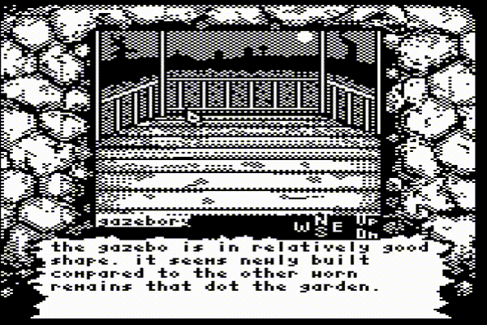

Hello and happy Easter everyone! I spent the last coupla days watching some kickass demos and seminars at the year’s biggest (this time virtual) demoparty: Revision! \m/ The entries were, hate to say it, not as good as most years. Groups are probably (and understandably) holding their massive prods for the day when they can share the awe with others at a physical party again. Big props to everyone that was willing to throw out a release in spite of the situation. The super size constrained categories, however, still slapped. The 256 byte compo was particularly amazing. 256b and under prods are often released outside of parties, so that's not a huge surprise. It was neat to be there with all the attendees that would normally be partying in Saarbrucken while I watched online. And the virtual dance parties were actually really fun! ;)
Aaaaanyway, aside from watching Revision, I spent the last couple days hackin’ away at the navigation system in Castle Rex. This was more of an exercise in design than coding, so this will be a less technical entry. The biggest inspiration for this game, and one of my favorite games, is Infocom’s Shadowgate. Shadowgate was a true point-and-click adventure. The interface was completely mouse-based when it debuted on Apple's Macintosh computer. It made such effective use of the Macintosh's UI, in fact, that I've heard tale that some people found the game helpful in orienting themselves with the, then radical, new graphical user interface. When Shadowgate was ported to the NES, a platform that has no mouse, the interface was carried, surprisingly intact, along with it. This is true of Infocom’s other games that received ports and the platforms they were ported to. Deja Vu on the Commodore 64 emulated the Macintosh’s mouse interface with a joystick. If you've ever tried using a joystick as a mouse then you know the friction. It is intuitive, but it is, at the same time, a terrible approximation of a proper analog mouse experience. Acceleration is either not present or emulated based on the time that a direction is held.
I do love these point-and-click ports, and, in fact, the digital cursor works fairly well. Still, it is undeniably a little clunky; especially on the platforms like C64. There is a full keyboard sitting beside the player, and if the gameplay experience can be worked around the available input devices: why not do so? While working on the interface for Castle Rex, my implementations have defaulted to the sort of “mousey” experiences I'd seen before just because of the prior art. However, pretty quickly into testing, I realized what a pain it is to drag the joystick all the way to the bottom of the screen to select an exit or item (more on those in a later entry).
Recently I’ve settled instead on a keyboard approach akin to the navigation you’d find in classic text adventures. A room can have 6 possible exits. These are selected by hitting the appropriate key: N for North, S for South, etc. I’ve been messing with it a little, and it’s working real slick so far. A user is almost certain to move the cursor back onto the viewport after navigating to a new room, so another advantage of the new system is that it leaves the cursor closer to the area the player will likely be interacting with. As I alluded to in the last paragraph, the one exception is if the player wishes to use an item from their inventory. My nebulous plan is to make this interface keyboard based as well, but there's too much to think about before I expound on that yet.
After reworking the export tools last week, I also decided to update the UI design and layout. It was a little busy before. There were UI elements like a cauldron that I kinda threw in there without a master plan for integrating them into the gameplay. I’ve reduced it to a simpler stone wall design. On the subject, I've begun using a combination of Grafx2 and Photoshop. You would think a tool as powerful (and expensive *huffing emoji*) would have better pixel art capabilities, but Grafx2 still destroys it when it comes to things like dithering. So now I'm use Photoshop (with a 3:2 pixel aspect ratio) to make the rough draft, finishing details in Grafx2, then finishing back in Photoshop before exporting.
Back on the topic of navigation, I made a sort of compass that displays the keys the player may press to exit their current room. Currently, all keys (N,S,E,W,U,D) are shown, but I’m thinking I’ll either highlight the relevant ones or black out the irrelevant ones to make the available actions more obvious.
Before I wrap up: there were a few coding issues I worked on in the last couple days as well. In the little movie above, you can see that there are simple transitions when a new room is switched in. This is what I referred to in the last blog entry as the reason for keeping an entire copy of the room's picture data in memory. So, those are fun. I also fixed some issues with the exporter (the usual PETSCII/ASCII compatibility woes, sigh). I did lots of little UI tweaks as well, and...looking at the video I just recorded, I can see that I need to clear the room name area (also a new feature), when a new room is loaded. Whoops. That'll be next. Also, if the GIF is running at a chaotic rate for you, don't worry: the actual speed is very sane. Also, the text is placeholder. I'll put at least a modicum of effort into making the final text interesting.
Okay, that’s all for now. Thanks again for reading! It means so much wow :^)